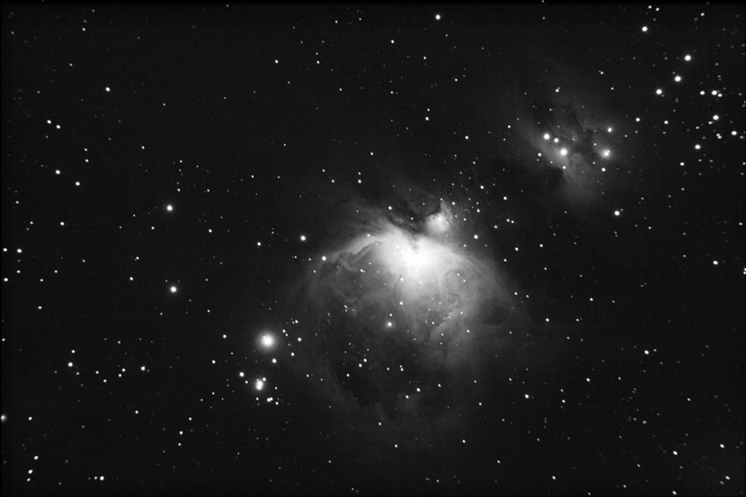

M42 - The Great Orion Nebula 猎户座大星云
猎户座大星云是一个位于猎户座的弥漫星云，距地球1600光年，为最接近我们的一个恒星形成区。它还是天上最亮的星云，即使在受光害影响的地区都可以肉眼看到。我们可以轻易地在猎户座腰带的南方找到它。视力很好的人看到的猎户座大星云呈模糊状，通过望远镜或双筒望远镜会看得更明显。
猎户座大星云中央有一个被称为四合星（Trapezium）的年轻疏散星团。四合星由四颗排列成四边形的年轻恒星组成，故名。
对于天文学家而言，这个星云是一个热门的研究对象，由大型的地基望远镜，到哈伯太空望远镜(HST)都指向它。猎户座大星云还是天文摄影爱好者和天文台的大望远镜最主要的拍摄对象之一。近年天文学家已直接观测到该星云四合星附近的原行星盘（Protoplanetary disk）、棕矮星、气体激烈且混乱的运动，和附近大量出现的光子化恒星。M42是研究恒星诞生的观测、研究目标之一。
对于天文爱好者而言，M42是一个相当值得一看的深空天。我们只要有一副双筒望远镜或小望远镜就可以看到M42。若环境理想，以装上广角镜头的相机进行五分钟的曝光已能拍摄到整个猎户座和猎户座大星云的粉红色光芒。而拍摄旁边星云的细致度也是考验天文摄影、望远镜分辨率和后期处理功夫的对象。
拍摄器材和参数：景德（WilliamOptic）ZenithStarED80；Vixen GP2 赤道仪；Canon 400D；ISO800，Total Exposure 30min
作者：祝尔康。摄于浙江省安吉县天荒坪，2007年12月17日。